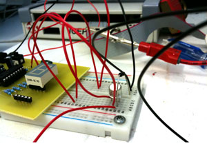
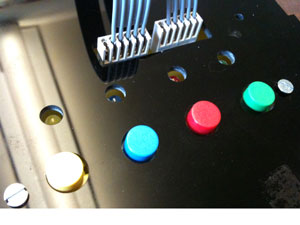

The Brief
“Working in groups of three, you are to manufacture a Microcontroller- based PCB interfacing circuit, develop software to enhance its interaction with a PC and contribute individual elements to a group report.”
Designing the PCB

After understanding the basic connections of the Microchip microcontroller we were using, we went about designing the PCB to allow the microcontroller to interface with a computer via serial and to control a 7 segment display. The PCB was then delivered to us blank and then we populated it with the components.
Prototyping
{kind=link}
After the components were populated we could use breadboards to test connections with switches and LED lights. We could also play with the RISC assembly to detect input from switches and control output to LED's.
Artifact
{kind=link}
Our final artifact was a basic Simon memory game. The lights would light up and the user had to match the sequence. Once they got far enough in the game without making an error, we powered a motor that would open a door to reveal the inside of the artifact (not pictured above).